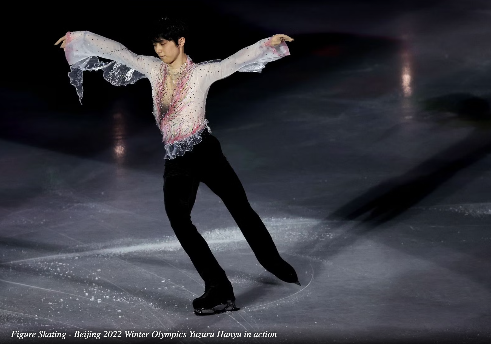

Introduce the figure skating
 Figure skating derives its name from the patterns (or figures) skaters make on the ice. There are various kinds of figure skating, including freestyle, pairs, ice dance, and synchronized team skating. The style of competition, as well as the moves and techniques of the skaters, varies for each category of skating.
Essentially, the technics are are used and being assessed in this sport are footwork, spins and jumps. It is confusing when you dig into those categories, because there are so many detailed groups under those. Today we are just going to zoom into the jumps.
All jumps share the same rotational position in the air, and all are landed on one foot, but they are distinguished by their takeoff positions. To understand what is takeoff position, we need to know the structure of a figure skate first.
Now we kinda have a rough idea that why all the jumps fall into two main groups: edge jumps (salchow, loop, and axel) and toe jumps (toe loop, flip, and lutz).